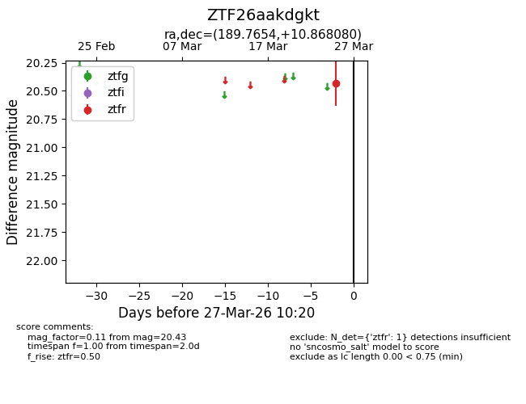
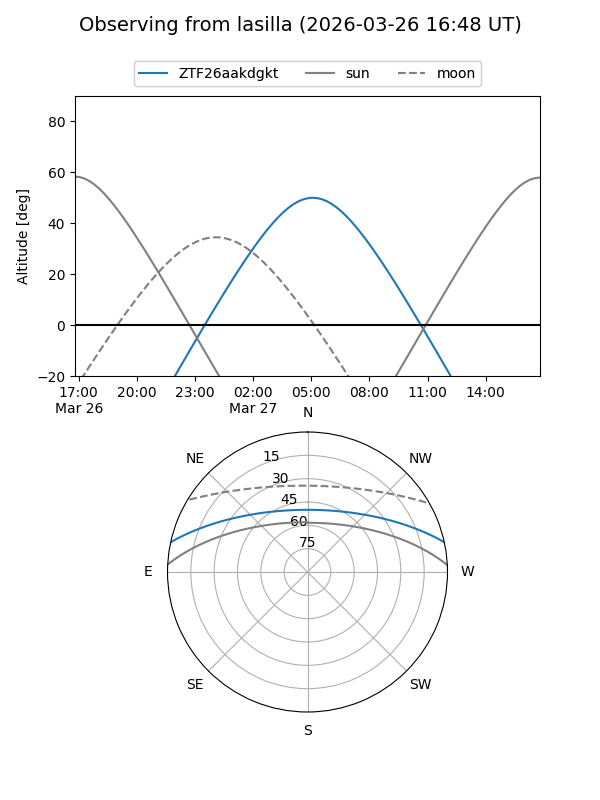
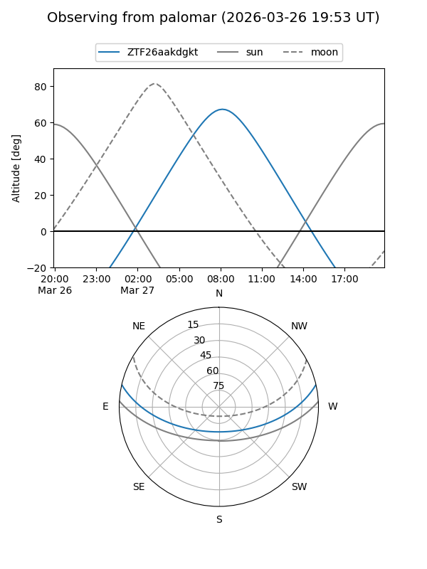

ZTF26aakdgkt
Target ZTF26aakdgkt at 2026-03-27 10:23
Aliases and brokers:
FINK: link
Lasair: link
ALeRCE: link
alt names
ZTF26aakdgkt (ztf,fink_ztf)
Coordinates:
equatorial (ra, dec) = 189.7654,+10.86808
equatorial (HMS+DMS) = 12:39:03.69,+10:52:05.09
galactic (l, b) = (292.1873,+73.48110)
Flags:
Photometry:
last ztfr=20.43
1 ztfr detections
Lightcurve

Visibility


Additional plots